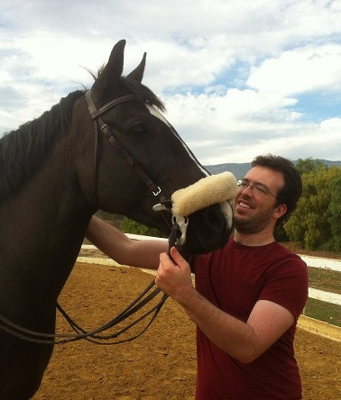

Physics of Cell Motility, Sensing, and Mechanics

Publications, Notes, and Errata
Web interface for finite size corrections in membrane MD
Mathematical Contest in Modeling
Collaborators:
People
Join us - we are recruiting graduate students!
|  | Brian Camley (with Felix)Assistant Professor, JHU Physics & Astronomy and BiophysicsPostdoc at UCSD 2012-2017 PhD, UCSB Physics 2012 |
Ifunanya (Ify) NwogbagaUnderstanding how spontaneous cell turning and cell polarity reversal under a signal are related.Ify is a graduate student in the Program in Molecular Biophysics. His undergraduate degree is in Chemical Engineering from Princeton. |
Pedrom ZadehWorking on statistical models and image analysis to infer the rules of branching morphogenesis from data from the Ewald group.Pedrom is a graduate student from JHU Physics and Astronomy. His undergraduate degree is in Physics from University of Virginia. |
 | Travis LeadbetterConstructing energy landscape models of cell polarity and cells interacting with complex geometries.Travis is majoring in Physics and Mathematics and will be graduating Spring 2020. |
Group Alumni
 | Melissa MaiStudying the transition between swimming and crawling in cell motility with minimal hydrodynamic models.Current JHU Biophysics and Mathematics undergraduate. [preprint], in press at Soft Matter Congratulations to Melissa on her Hertz Fellowship and NSF GRFP!. Currently in Harvard's Biophysics PhD program |
Austin HopkinsWorking on models of collective chemotaxis with leaders and followers [paper].Graduated from JHU Physics & Astronomy Spring 2018 and spending a year as a research assistant in the group. Currently a graduate student at UCSB Physics |
Amit Singh, PhDWorking on how polarity proteins can cooperate to sense a cell's shape.PhD in Mechanical Engineering, UCLA, 2018. Currently Assistant Professor, Mechanical Engineering, BITS Pilani |